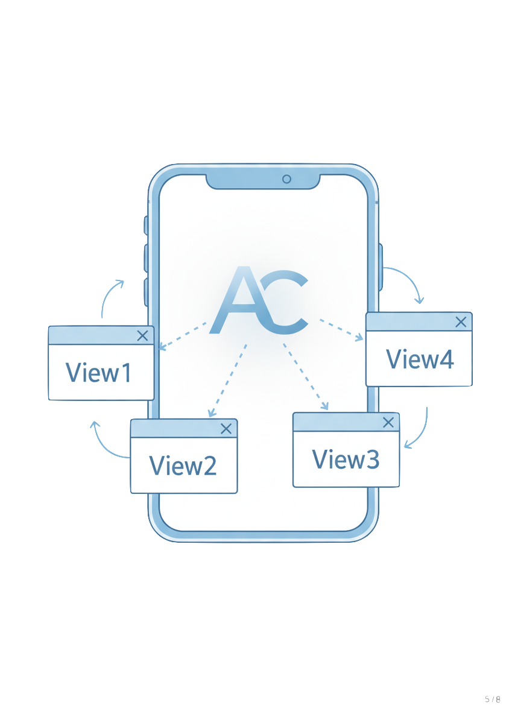

MCP는 직접 만들어 쓰자
관점을 연결하다
아이디어 도출과정
알고리즘이 내 취향·의견에 맞는 정보만 보여주고,
다른 관점은 배제하는 현상
알고리즘은 사용자의 취향을 강화합니다.
내가 영상을 볼수록, 점점 내가 좋아하는 것만 뜨게 됩니다.
확증편향: 자신의 신념을 확인해주는
정보만 선택적으로 받아들이는 현상
역설적으로 우리가 많은 정보에 노출될수록,
다른 생각과 연결될 기회는 점점 줄어듭니다.
"MZ들은 무슨 생각을 할까?" - 이것도 필터 버블로 인한 현상입니다
토론 대신 각자 다른 현실, 의견 차이가 아닌 의견 분리
서로 다른 관점들을 의도적으로 연결하는 서비스
하나의 이슈를 하나의 관점으로 소비하는 구조를 넘어,
사고의 흐름을 확장하고 다양한 시각에서
자신의 의견을 생각해보게 되는 기회를 제공합니다.
"알고리즘이 정답을 제시하는 것이 아니라,
사용자가 다양한 정보를 손쉽게 비교할 수 있는 환경을 만듭니다"
낯선 관점 · 다른 의견 · 상반된 해석을 연결

데모 영상
뉴스, 유튜브 등 다양한 매체의 내용을 AI가 해석하고,
쟁점이 되는 부분을 다른 관점과 연결
실제 크롤링된 뉴스 데이터 기반의 다양한 관점 제공
단순한 반대 의견이 아닌:
제3의 해석 · 보강 자료 · 객관적 팩트
사용자가 능동적으로 선택 → 편향된 시각에 갇히지 않고 사안을 입체적으로 조망
필터 버블은 단순한 개인의 문제가 아닌,
사회 전체가 서로를 이해하지 못하게 만드는 구조적 문제입니다
이해하고 존중할 수 있는 문화를 만드는 것이
우리가 바라는 방향입니다